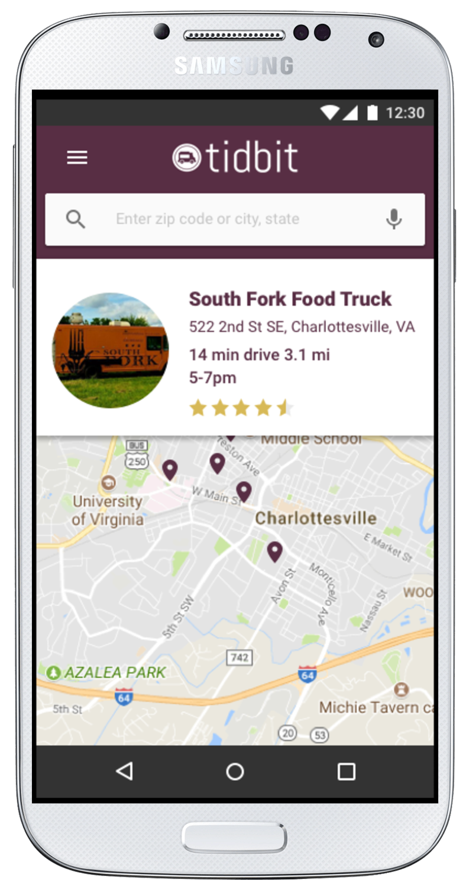
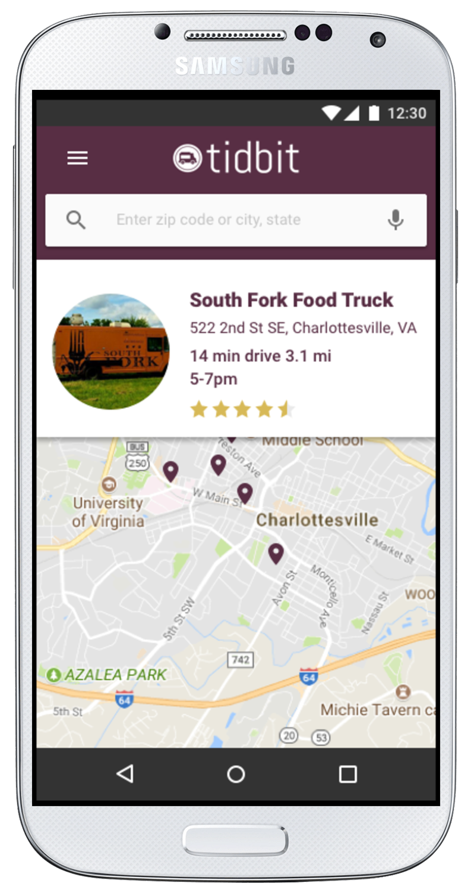
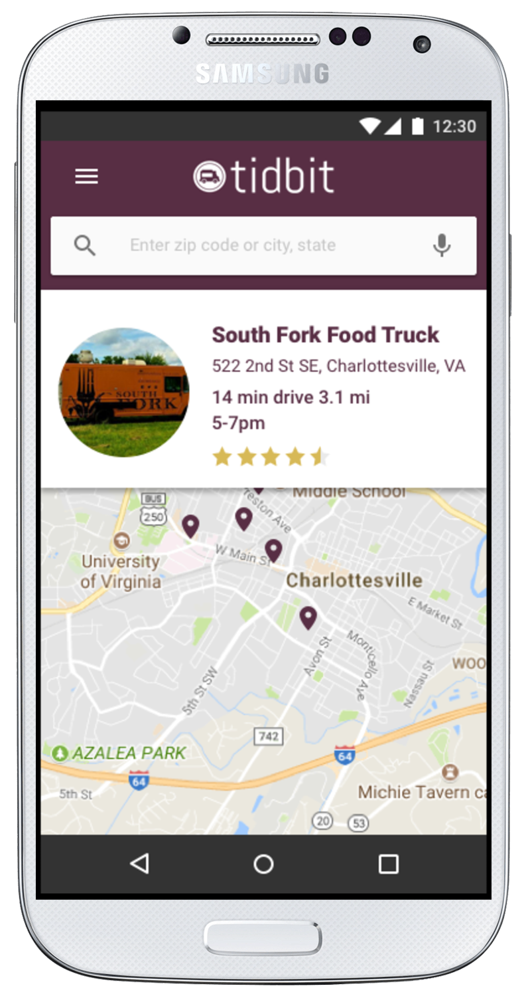

About the Project
Several apps to search for food trucks exist, but there is not a well-designed solution that integrates payment solutions. This app allows users to discover food trucks in there area, select food and purchase.

Several apps to search for food trucks exist, but there is not a well-designed solution that integrates payment solutions. This app allows users to discover food trucks in there area, select food and purchase.
I created a survey to find out more about who would be using this app.
I found that everyone I surveyed was interested in an app that would help them search for food trucks.
Half the respondents, were interested in ordering and paying in the app.
Respondents were also interested in having reviews of the food trucks, so I made sure to include that in my app.
I then created User Personas, to get a better understanding of the users' goals, behaviors and how they will interact with the application.
Janet is interested in having a simple app to search for local food trucks in her area and find out how long they will be there. A feature that allows her to look at the menu would be useful as well.

Christy is interested in having a food truck app that she can use to research different food truck options and read reviews. She would like to read through the menu and order online.

April works as a travel agent and spends a lot of her time traveling. She wants an app that can help her to locate food trucks in any city she happens to be visiting.
I analyzed three different apps for searching for food trucks to see what kind of features they offered.
Designing user flows helped me to focus on what the user needs to get done and how to deliver that in the most effective manner possible.


I created a sitemap to help organize and clarify the content that needed to be in the app.

The font for the logo is Able. It is clean, easy to read and a good display font. The icon in the logo is to show user it is a food truck app. The color choices were to go go along with the colors in a salad to match the food theme.
Then, I started arranging the the elements in the wireframes.


Throughout the process, I did user testing. The testers liked the color and app name. They also thought the concept of an app for searching for food trucks is useful. They were a bit confused at first on what the app could do.
The Tidbit user needs to be able to find food truck on the map and select the food truck. The user also needs to be able to view the menu, order food and pay for it within the app. There is also an optional sign in process, so users can save there payment info.


I learned the importance of getting feedback through the process. When the testers were a bit confused at first on what the app could do, I added a tagline on the loading screen to clarify. I also added a page to confirm the order, so that users have a chance to cancel order if they need to make a change to it. These changes made for a better user experience.
Something I would do differently in the future, is to test the app on more users. Having feedback from a larger variety of users would help ensure that the app is as user-friendly as possible.